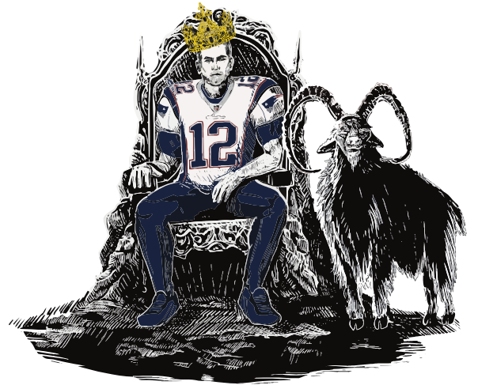
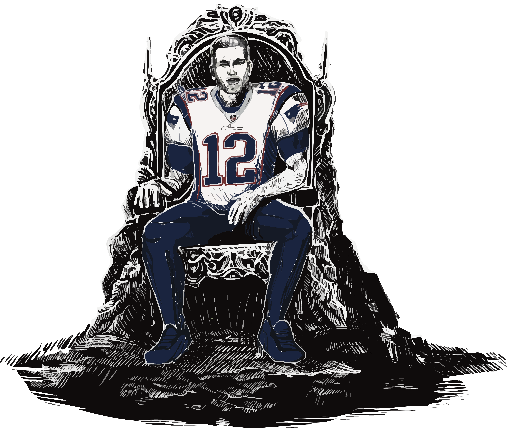
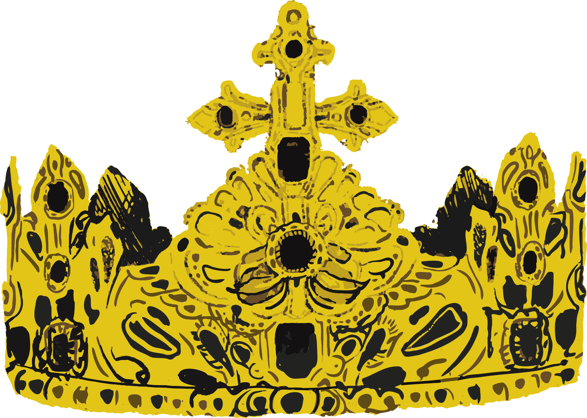

Tom Brady is



NOT
The
GOAT
SCROLL
7×
Super Bowl Champion
Most in NFL History
5×
Super Bowl MVP
Most in NFL History
3×
League MVP
2007 · 2010 · 2017
286
Most Wins All Time
251 Regular-Season Wins · 35 Playoff Wins
THEN
WHO
IS
THE
GOAT
Vote Your GOAT
[ R ] replay
Keep scrolling